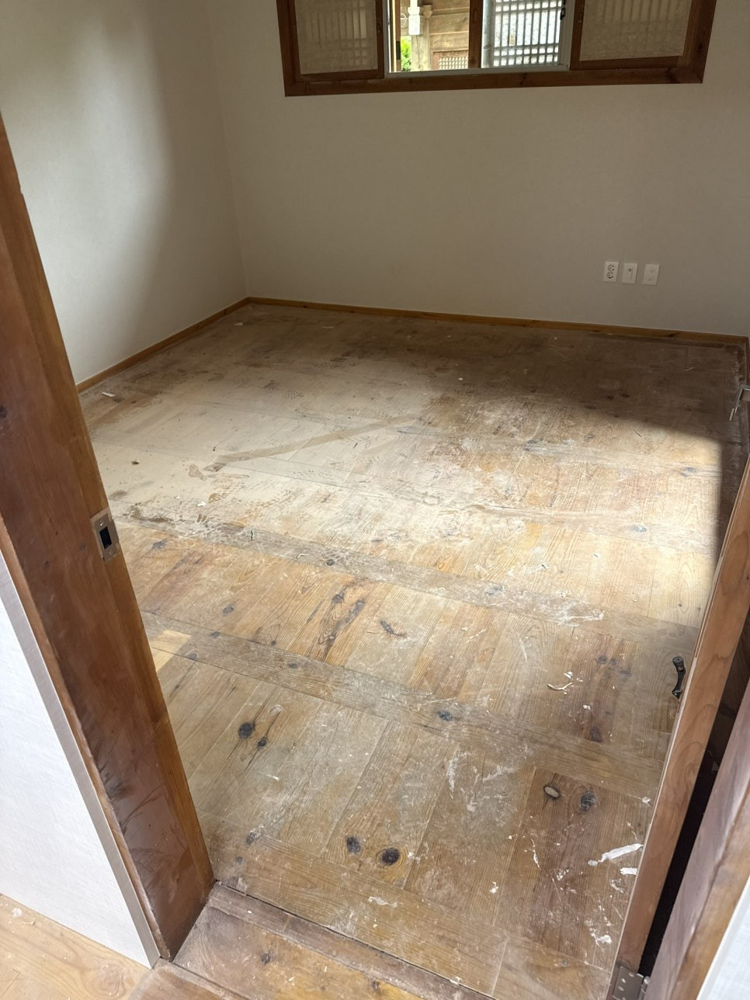
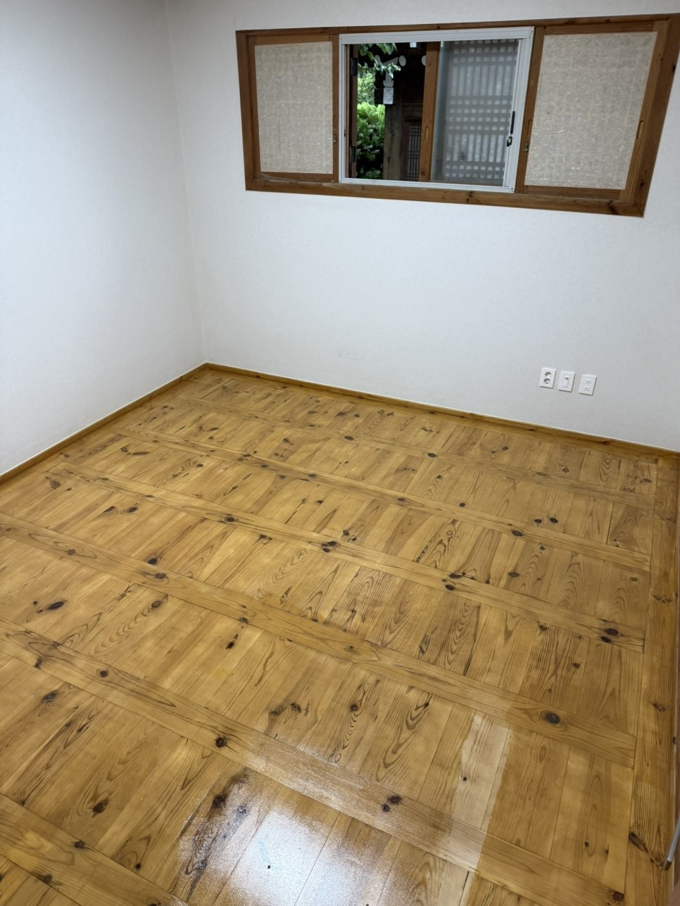

한옥 마루 연마 · 오일스테인
오래 비워둔 한옥 마루는 먼지와 예전에 칠한 자국이 엉겨 붙어 나뭇결이 아예 안 보입니다. 걸레로 닦는 것으로는 안 없어집니다.
엉겨 붙은 건 닦아서 안 됩니다
가평 전통가옥 작은방이 그랬습니다. 먼지와 페인트 자국이 층을 이뤄 원목 마루인지 알 수 없는 상태였습니다. 이건 청소 문제가 아니라 얹혀 있는 층을 걷어내야 하는 작업입니다. 연마로 벗겨내면 그 밑에 결이 그대로 있습니다.
마루는 밟는 면이라 평탄도를 봅니다
대문은 보는 면이고 마루는 밟는 면입니다. 단차가 남아 있으면 발로 느껴지고 걸레질할 때 걸립니다. 판재 사이 높이와 못 자리를 보면서 면을 고르게 잡습니다.
롤러로 결을 따라 한 방향으로 갑니다
넓은 마루는 붓으로 가면 자국이 남습니다. 롤러로 결 방향을 따라가고, 판재 한 줄을 끝까지 간 다음 다음 줄로 넘어갑니다. 중간에서 끊으면 겹친 자리가 색이 진하게 보입니다.
실내라 건조와 환기를 먼저 잡습니다
마루는 집 안입니다. 도포하는 날과 마르는 날 동안 드나들 수 없는 구간이 생깁니다. 환기 동선과 며칠 동안 못 쓰는지를 먼저 말씀드리고 시작합니다.
이런 작업을 합니다
- 한옥 원목 마루 연마·오일스테인
- 툇마루·대청마루 목재 복원
- 먼지·구 도막·페인트 자국 제거
- 판재 평탄도 정리
- 롤러 결 방향 도포
- 실내 건조·환기 계획
WORKS
한옥 마루 연마·오일스테인 시공사례
실제로 작업한 현장입니다. 시공 전후를 같은 각도에서 담았습니다.


가평 한옥 마루 연마·오일스테인
오래 비워둔 전통가옥 작은방. 먼지와 페인트 자국이 엉겨 나뭇결이 보이지 않던 원목 마루를 연마해 결을 되살리고, 롤러로 결을 따라 오일스테인을 도포해 고택 특유의 깊은 색감을 되찾았습니다.
FAQ
한옥 마루 연마·오일스테인, 자주 묻는 질문
마루에 예전에 칠한 게 남아 있는데 그 위에 되나요?
그 위에 바르면 같이 벗겨집니다. 들떠 있는 층은 걷어내고, 붙어 있는 건 거칠게 만들어 새 도료가 물리게 한 다음 올립니다.
작업하는 동안 집에 있어도 되나요?
도포한 구간은 마르는 동안 밟을 수 없습니다. 방을 나눠서 하거나 며칠 비우시는 쪽으로 일정을 맞춥니다.
마루 판재가 몇 장 상했는데 같이 봐주시나요?
눌러서 들어가거나 못이 헛도는 판재는 도장으로 안 됩니다. 가서 보고 그 판만 손볼 수 있는지 말씀드립니다.
다른 시공분야 · 지역
찾으시는 작업이 아래에 있으면 해당 페이지를 보시면 됩니다.
한옥 마루 연마·오일스테인 상담, 사진 한 장이면 됩니다
목재 사진과 위치를 보내주시면 상태를 보고 작업 범위와 일정을 안내해 드립니다.